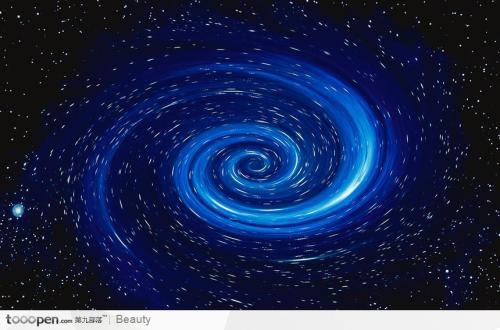
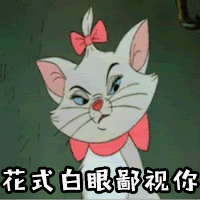

服务范围
一个服务
两个服务
三个服务
四个服务 团队介绍这是介绍小时候， 我有个愿望， 那就是能一家人去看一次海， 海，年年月月都在， 而我的愿望却只能埋藏在我心里， 年年月月，唯有我自知。 后来， 我有许多个愿望， 却无一个能实现的， 所以， 我不会，也不敢有愿望了， 失落的，年年月月， 唯有自己自知。

这也是介绍天有多远，我又会走向怎样的从前 夜幕已坠，繁星点点又是怎样的对白 我会走在哪里，是否是没有你的未来 我在遥远等待，是否可期的只是谎言的无奈 我想所谓过去亦或未来，也没什么值得伤感亦或悲哀 这世上从来没有什么值得期待，亦没有什么无可忘怀 我只是个流浪汉，一无所有，却妄想拥有白天包括黑夜 新闻动态习惯孤独 然后爱上孤独 将一个人深藏于一颗心 用一生去领悟人间烟火 他曾历经了世间百态 如今 只是安详地坐着 朝向远方望去 安静等待 默默牵挂 
美丽的梦和美丽的诗一样，都是可遇不可求的 ，常常在最没能预料到的时刻出现。 出现在我们人生中的每一个过客也是 如此。 三生石上望三生，缘定三生载永恒。 前世与谁情缱绻？来生是否又相逢！ 今生梦断黄泉路，彼岸花前泪有声。 血色石前谁名刻？乡台泪眼望几层？

人这一辈子 不是说对不起，就一定是没关系！ 不是说谢谢你，就一定是不客气！ 有时候想说对不起，但那人已失去！ 
地图 
邮件 客服 版权所有@非洲矿业 |